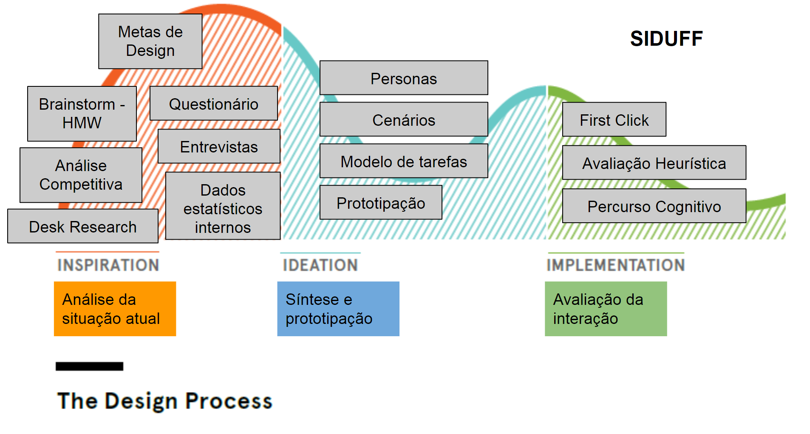

Avaliação
Terceira e última fase do projeto. Nesta fase avaliamos a solução obtida, utilizando um publico controlado, buscamos falhas e propomos melhorias para o projeto.
Técnica de avaliação por observação, que observamos como usuários interagem ao nosso sistema
Técnica de avaliação por inspeção, que analisamos heurísticas violadas pelo nosso sistema.
Técnica de avaliação por inspeção, que analisamos a facilidade de aprendizado do nosso sitema.
First Click
Nesta etapa disponibilizamos nosso portótipo para alguns usuários e propomos algumas situações para verificar como reagiriam diante tais situações. Para isso, utilizamos o Optimal Workshop. Criamos então 6 cenários disponibilizados para alguns pessoas.
Para realizar a atividade o usuário lerá um texto descrevendo uma situação e tentará resolver clicando no local do protótipo que corresponda ao ponto correto para realizar determinado objetivo.
Para realizar a atividade o usuário lerá um texto descrevendo uma situação e tentará resolver clicando no local do protótipo que corresponda ao ponto correto para realizar determinado objetivo.
A partir disso, as respostas são analisadas e discutidas a fim de propor ideias para solucionar possíveis dificuldades encontradas pelos usuários
Resultado: Nesta postagem dois lugares seriam corretos, 50% dos participantes clicaram no perfil e outros 20% clicaram em pesquisar, outros 30% clicaram em outros lugares. (10 Respondentes)
Resultado: 88% dos usuários clicaram na posição correta e outros 12% clicaram onde aparagaria todas as notificações. (8 respondentes)
Resultado: 100% dos usuários clicaram na posição correta. (7 Respondentes)
Avaliação Heurística
Nesta etapa o grupo se dividiu para avaliar as telas do projeto, utilizando como base as 10 violações heurísticas de Nielsen, que estão listadas a baixo.
Após a avaliação individual o grupo se uniu para identificar quais heurísticas foram violadas, quais os principais problemas e quais suas soluções.
1 - Controle e Liberdade do Usuário (VIOLADA)
A Heurísticas de Controle e Liberdade do Usuário define que o sistema deve fornecer alternativas para o usuário sair de uma situação indesejada, porém as alternativas acabam não ficando claras nos locais indicados. Possui uma Alta Gravidade para o login e baixa para as popups de formulários. Para uma solução adequada basta permitir que o usuário ao clicar fora da pop-up cancele a ação, ou criar um botão. Para o login seria necessário criar um botão de cancelar a ação.


2 - Prevenção de Erros (VIOLADA)
A Heurísticas de Prevenção de Erros se baseia em proteger os usuários de ações irresponsáveis que possam levar ao erro podendo atrapalhar na tomada de decisão do usuario. Foi identificado violações nas paginas de formulários por não possuir botões de retorno na tela. Possui uma gravidade média e pode ser facilmente corrigida colocando os botões de cancelamento ou formas de fechar os pop-ups.
3 - Ajuda e Documentação (VIOLADA)
A Heurísticas de Ajuda e Documentação se baseia em fornecer ao usuario um conteúdo descritivo de duvidas e soluções de problemas ou possiveis dificuldades que exitam no sistema, embora não seja muito utilizada é importante possuir tal funcionalidade para auxiliar o usuários nos momentos de dificuldades, possui uma baixa gravidade. Para solucionar tal problema seria necessário a criação de uma documentação, criação de um local para exposição da mesma e uma forma de acesso ao usuário como por exemplo um botão de ajuda ao clicar no canto superior direito.

4 - Correspondência entre o Sistema e o Mundo Real (VIOLADA)
A Heurísticas de Correspondência entre o Sistema e o Mundo Real se baseia em utilizar conceitos do mundo real em ambientes digitais com o objetivo de facilitar a compreenção do usuário e fazer o sistema mais intuitivo. Foi identificado que no botão de logar no sistema poderia ter o texto de "Entrar" no sistema para facilitar tal heurística. Possui uma gravidade baixa.
Percurso Cognitivo
Nesta etapa, buscamos identificar como usuários de perfil comuns reagiriam a determinadas escolhas ao
navegar em nosso sistema. Para isso, utilizamos como base as personas e o resultado do first-click.
Como perfil definimos usuários do meio acadêmico. Como tarefas, identificamos e analisamos as seguintes:
Tarefa 1 - Definir interesses (5 passos)
Usuários típicos:Estudantes e professores universitários.
Aprendizados: Deve aprender que ao selecionar os interesses, o feed será customizado para
atendê-los
.
Conhecimento a priori: saber usar internet e computador.
1. Abrir a página de login
Os usuários saberão o que fazer?
Sim, pois haverá um botão com o texto “Logar” na página inicial.
Os usuários saberão como fazer?
Sim, pois existe um botão na tela de fácil acesso.
Os usuários entenderam, a partir do feedback, se a ação foi correta?
Sim, o sistema irá exibir o menu de login.
2. Preencher o formulário de login
Os usuários saberão o que fazer?
Sim, pois haverá campos com placeholders indicando oque deve ser escrito.
Os usuários saberão como fazer?
Sim, pois fica claro o espaço em que a informação deve ser digitada e um botão na tela de fácil acesso para a confirmação do login.
Os usuários entenderam, a partir do feedback, se a ação foi correta?
Sim, a página inicial será apresentada com informações do seu perfil.
3. Clicar no menu do Usuario
Os usuários saberão o que fazer?
Sim, pois segue o mesmo molde que as redes sociais e foi verificado no first-click que os usuários não tem problema com isso.
Os usuários saberão como fazer?
Sim, basta clicar na opção.
Os usuários entenderam, a partir do feedback, se a ação foi correta?
Sim, pois abrirá um menu.
4. Clicar na opção definir interesse
Os usuários saberão o que fazer?
Sim, haverá uma frase com uma escrita clara e objetiva.
Os usuários saberão como fazer?
Sim, basta clicar na opção de definir interesses. Porém, alguns usuários podem não saber que existe essa opção.
Os usuários entenderam, a partir do feedback, se a ação foi correta?
Sim, pois abrirá um pop-up para a escolha dos interesses.
5. Escolher os interesses
Os usuários saberão o que fazer?
Sim, os interesses a serem escolhidos remetem as tags dos posts. os usuários conseguirão associar os dois elementos e definir seus interesses.
Os usuários saberão como fazer?
Sim, as tags indicarão claramente que são interesses a serem escolhidos e haverá um botão para a confirmação da ação.
Os usuários entenderam, a partir do feedback, se a ação foi correta?
Não, pois não há um feedback depois de salvar suas escolhas.
Tarefa 2 - Buscar Postagem (3 passos)
Usuários típicos:Estudantes universitários.
Aprendizados: Descobrirá vagas disponíveis.
.
Conhecimento a priori: saber usar internet e computador.
1. Selecionar Caixa de Busca
Os usuários saberão o que fazer?
Sim, pois estão no sistema para realizar buscas do tipo.
Os usuários saberão como fazer?
Sim, pois o usuário já vai ter conhecimento prévio sobre essa opção e vai saber exatamente onde clicar. O usuário também pode pular para a etapa 3
Os usuários entenderam, a partir do feedback, se a ação foi correta?
Sim, o sistema irá exibir o menu do usuário.
2. Salvar Formulário de Busca
Os usuários saberão o que fazer?
Sim, pois estão no sistema para realizar buscas do tipo.
Os usuários saberão como fazer?
Sim, há um botão com a informação de salvar.
Os usuários entenderam, a partir do feedback, se a ação foi correta?
Sim, o sistema irá exibir um feed com todas as vagas encontradas.
3. Abrir postagem desejada
Os usuários saberão o que fazer?
Sim, pois é intuitivo clicar no ponto que deseja.
Os usuários saberão como fazer?
Sim, pois ao passar o mouse sobre o desejado, haverá a indicação para clicar.
Os usuários entenderam, a partir do feedback, se a ação foi correta?
Sim, abrirá o link principal da postagem.
Resultado
Como resultado, encontramos um problema para definir os interesses do usuário, visto que a opção não está muito clara para um usuário iniciante. Além disso, não fica claro quais interesses o usuário já tem.
1) Retome as suas metas de design e diga se os métodos de avaliação utilizados conseguiram avaliar tais metas. Se não conseguiram dê detalhes de como estas metas poderiam ser avaliadas.
Nós utilizamos os três métodos de avaliação em conjunto para avaliar todas as nossas metas de design, porém, algumas metas de design tiveram ênfase perante algumas avaliações Interface simples e intuitiva: Conseguimos avaliar essa meta de design através da avaliação first click, pois esse teste foca na intuição do usuário. Facilidade de aprendizado: Utilizamos o percurso cognitivo para avaliar essa meta de design, pois esse método de avaliação foca apenas no aspecto facilidade de aprendizado.
2) Qual método deu melhor resultado e por que?
O método que deu melhor resultado foi a avaliação heurística porque descobrimos mais problemas que as outras avaliações.
3) Por que é interessante utilizarmos mais de um método de avaliação?
Para que possamos avaliar corretamente é importante utilizar métodos complementáres para obtermos os melhores resultados e identificarmos as possíveis falhas, um método de observação irá utilizar dos usuários e permitirá encontrar imprevistos já um método de inspeção utilizará de um especialista para procurar problemas conhecidos e não solucionados.
4) Considerando um teste de usabilidade (por exemplo como o realizado com first click) qual seria um número adequado de participantes? Por que?
O numero adequado seria de 5 á 10 usuários por personas, o motivo desse numero é que ao pegar os 10 ou 100 do mesmo grupo de personas o resultado ficara parecido e em uma curva de acertação, entretanto é importante não misturar tais personas para não contaminar tais resultados.
5) Apresente o road map (veja exemplos em anexo) de todo o processo de design utilizado neste projeto. Relacione todos os métodos utilizados ao longo do processo.

Copyright © 2021 - All Rights Reserved - Gruple
Template by OS Templates